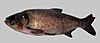

bighead-carp

Has synonym(s): hypophthalmichthys nobilis
Definition: The bighead carp (Hypophthalmichthys nobilis) is a species of cyprinid freshwater fish native to East Asia, and is one of several Asian carps introduced into North America. It is one of the most intensively exploited fishes in fish farming, with an annual worldwide production of over three million tonnes in 2013, principally from China. Unlike the omnivorous common carp, bighead carp are primarily filter-feeders, preferentially consuming zooplankton but also phytoplankton and detritus.
Source: Wikipedia
Wikipedia Page (Something wrong with this association? Let us know.)
Wikidata Page (Something wrong with this association? Let us know.)